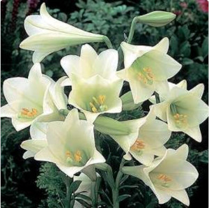
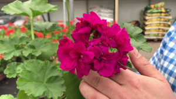
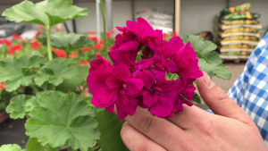
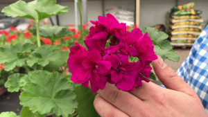
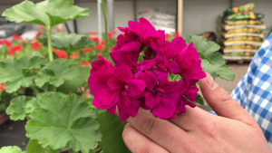
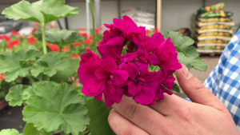

Composición del jardín
Durante la primavera veremos florecer las azucenas  los claveles
y los humildes geranios 
 y los humildes geranios  y los humildes geranios 
y los humildes geranios  y los humildes geranios 